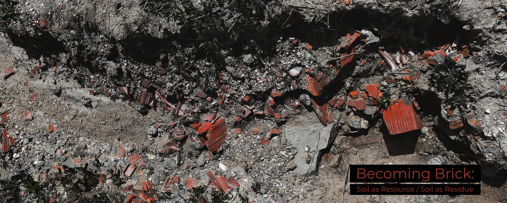

Imrahor Valley is widely recognized with its ecological value and current political interventions. However, this project approaches the valley through a relatively overlooked aspect of it: the history of brick production. With the clay-and-silt alluvial deposits along the stream, İmrahor functioned as one of the main sites for brick production in the last century, physically contributing to the construction of Ankara. From the 1930s onwards, soil was seen as a resource, excavated from the valley, transformed into brick and tile, and incorporated into the expanding fabric of the city. Following the decline of brick production in the 1990s, the factories gradually disappeared, leaving behind excavation pits, industrial debris, and a landscape that continues to absorb the consequences of decades of extraction. By tracing this overlooked history, the project investigates how soil loses its stable identity, and shifts between resource and residue with brick production.
How does the process of becoming reveal soil's shifting identity? What transformations does soil undergo in İmrahor Valley as it shifts from resource to residue through the history of brick production? What material traces of brick production remain now in the landscape after the industry's decline?
This project uses archival research, literature review, oral history, and site-based observation to trace the history of brick production in İmrahor Valley. Maps, aerial photographs, journal and newspaper archives, planning documents, academic studies, and social media archives are examined alongside an interview with a former factory owner. For the current situation, field observations and photographs are used to document the soil, remaining factories, extraction pits, ponds, and residues.